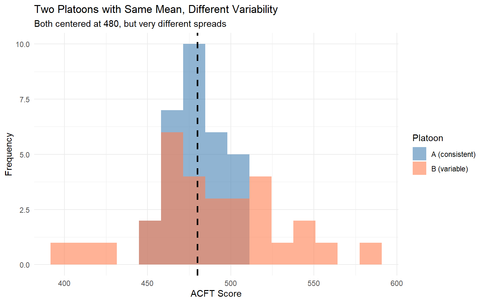
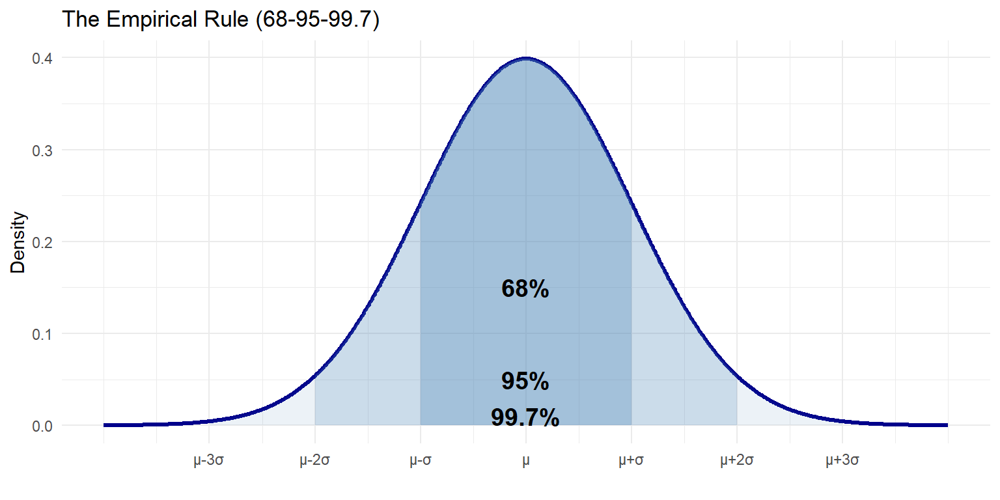
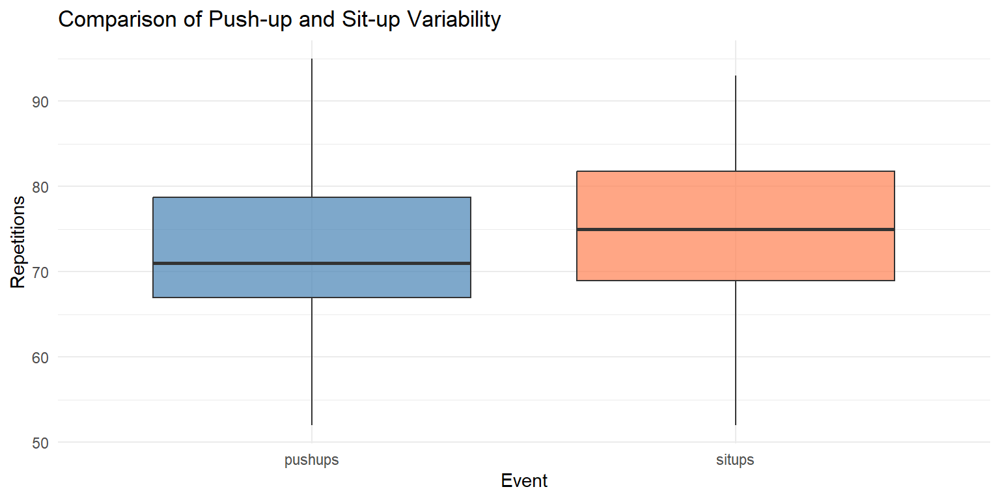

Code
pushups <- c(45, 50, 55, 60, 65)
range_val <- max(pushups) - min(pushups)
range_val[1] 20MA206X: Probability and Statistics
January 8, 2026
By the end of this lesson, you will be able to:
Reading: Devore 1.4
In Lesson 3, we learned to describe the center of a distribution using mean, median, and mode. But knowing the center alone doesn’t tell the whole story.
Consider two platoons with the same average ACFT score of 480:
These platoons are fundamentally different, yet they have the same mean! We need measures of variability (or spread) to capture this difference.
Low variability → Predictable, consistent performance
High variability → Unpredictable, inconsistent performance
Both have implications for:
The range is the difference between the maximum and minimum values:
\[\text{Range} = \max(x) - \min(x)\]
Advantages:
Limitations:
Push-up counts: 45, 50, 55, 60, 65
\[\text{Range} = 65 - 45 = 20 \text{ push-ups}\]
But if one soldier does 100 push-ups:
Range jumped from 20 to 55 due to a single outlier!
The interquartile range (IQR) is the range of the middle 50% of the data:
\[\text{IQR} = Q_3 - Q_1\]
where \(Q_1\) is the first quartile (25th percentile) and \(Q_3\) is the third quartile (75th percentile).
Ruck march times (minutes): 95, 100, 105, 110, 115, 120, 125, 130, 150
Q1 = 105 Q3 = 125 IQR = 20 Interpretation: The middle 50% of ruck times span 22.5 minutes.
Note: The outlier (150) doesn’t affect IQR!
The IQR is part of the five-number summary:
This is exactly what a boxplot displays visually!
Range and IQR tell us about spread, but they don’t use all the data. Variance and standard deviation consider every observation’s distance from the mean.
The sample variance \(s^2\) measures the average squared deviation from the mean:
\[s^2 = \frac{1}{n-1}\sum_{i=1}^n (x_i - \bar{x})^2\]
Why \(n-1\) instead of \(n\)? This is Bessel’s correction, which makes \(s^2\) an unbiased estimator of the population variance \(\sigma^2\).
Five soldiers’ ACFT scores: 450, 470, 480, 490, 510
Step 1: Calculate the mean \[\bar{x} = \frac{450 + 470 + 480 + 490 + 510}{5} = \frac{2400}{5} = 480\]
Step 2: Calculate each deviation from the mean
| Score (x) | Deviation (x - x̄ | | Squared Deviation (x - x̄ |
|---|---|---|
| 450 | -30 | 900 |
| 470 | -10 | 100 |
| 480 | 0 | 0 |
| 490 | 10 | 100 |
| 510 | 30 | 900 |
Step 3: Sum the squared deviations \[\sum_{i=1}^5 (x_i - \bar{x})^2 = 900 + 100 + 0 + 100 + 900 = 2000\]
Step 4: Divide by \(n-1\) \[s^2 = \frac{2000}{5-1} = \frac{2000}{4} = 500\]
The variance has units of “squared scores” (e.g., points²), which is hard to interpret. The standard deviation brings us back to original units.
The sample standard deviation \(s\) is the square root of the variance:
\[s = \sqrt{s^2} = \sqrt{\frac{1}{n-1}\sum_{i=1}^n (x_i - \bar{x})^2}\]
Units: Same as the original data
Interpretation: On average, ACFT scores deviate from the mean by about 22.4 points.
Always non-negative: \(s^2 \geq 0\) and \(s \geq 0\)
Zero only when all values are identical: If \(s = 0\), every observation equals \(\bar{x}\)
Sensitive to outliers: Squaring deviations amplifies the effect of extreme values
Same units as data (for \(s\)): Makes interpretation easier
Increases with spread: Larger \(s\) means more variability
Let’s compare two datasets with the same mean but different variability:
# Two platoons, both with mean = 480
set.seed(123)
platoon_A <- rnorm(30, mean = 480, sd = 15) # Low variability
platoon_B <- rnorm(30, mean = 480, sd = 50) # High variability
# Summary statistics
comparison <- tibble(
Platoon = c("A (consistent)", "B (variable)"),
Mean = c(mean(platoon_A), mean(platoon_B)),
SD = c(sd(platoon_A), sd(platoon_B)),
IQR = c(IQR(platoon_A), IQR(platoon_B)),
Range = c(max(platoon_A) - min(platoon_A), max(platoon_B) - min(platoon_B))
) %>%
mutate(across(where(is.numeric), ~round(., 1)))
comparison %>%
kable() %>%
kable_styling(bootstrap_options = c("striped", "hover"))| Platoon | Mean | SD | IQR | Range |
|---|---|---|---|---|
| A (consistent) | 479.3 | 14.7 | 17.4 | 56.3 |
| B (variable) | 488.9 | 41.8 | 53.0 | 185.9 |
Visualization:
combined_data <- tibble(
Score = c(platoon_A, platoon_B),
Platoon = rep(c("A (consistent)", "B (variable)"), each = 30)
)
ggplot(combined_data, aes(x = Score, fill = Platoon)) +
geom_histogram(bins = 15, alpha = 0.6, position = "identity") +
geom_vline(xintercept = 480, linetype = "dashed", linewidth = 1) +
scale_fill_manual(values = c("steelblue", "coral")) +
labs(title = "Two Platoons with Same Mean, Different Variability",
subtitle = "Both centered at 480, but very different spreads",
x = "ACFT Score", y = "Frequency") +
theme_minimal()
For bell-shaped (normal) distributions, standard deviation has special meaning:
For approximately normal distributions:
About 68% of data falls within 1 standard deviation of the mean: \([\bar{x} - s, \bar{x} + s]\)
About 95% of data falls within 2 standard deviations of the mean: \([\bar{x} - 2s, \bar{x} + 2s]\)
About 99.7% of data falls within 3 standard deviations of the mean: \([\bar{x} - 3s, \bar{x} + 3s]\)

ACFT scores are approximately normal with \(\bar{x} = 480\) and \(s = 50\).
Question: What range contains the middle 95% of scores?
Solution: Use the Empirical Rule with \(k = 2\):
\[[\bar{x} - 2s, \bar{x} + 2s] = [480 - 2(50), 480 + 2(50)] = [380, 580]\]
About 95% of ACFT scores fall between 380 and 580.
The IQR provides a formal method for identifying outliers:
An observation is considered an outlier if:
\[x < Q_1 - 1.5 \times \text{IQR} \quad \text{or} \quad x > Q_3 + 1.5 \times \text{IQR}\]
These are called the lower and upper fences.
Ruck march times: 95, 100, 105, 110, 115, 120, 125, 130, 150
Q1 = 105 Q3 = 125 IQR = 20 Lower fence = 75 Upper fence = 155 Outliers: The value 150 exceeds the upper fence (144.375), so it’s flagged as an outlier.
Sometimes we want to compare variability across datasets with different units or scales. The coefficient of variation provides a unitless measure.
The coefficient of variation (CV) expresses standard deviation as a percentage of the mean:
\[\text{CV} = \frac{s}{\bar{x}} \times 100\%\]
When to use: Comparing variability of datasets with different units or magnitudes
Compare variability of:
2-mile run CV: 10.7 %12-mile ruck CV: 10 %Both have 10% coefficient of variation, indicating similar relative variability despite different scales.
# Simulate APFT component scores for 50 soldiers
set.seed(206)
apft_data <- tibble(
soldier_id = 1:50,
pushups = round(rnorm(50, mean = 70, sd = 10)),
situps = round(rnorm(50, mean = 75, sd = 8)),
run_time = round(rnorm(50, mean = 13.5, sd = 1.2), 1)
)
# Calculate measures of spread for each event
spread_summary <- tibble(
Event = c("Push-ups", "Sit-ups", "Run Time (min)"),
Mean = c(mean(apft_data$pushups), mean(apft_data$situps), mean(apft_data$run_time)),
SD = c(sd(apft_data$pushups), sd(apft_data$situps), sd(apft_data$run_time)),
Variance = c(var(apft_data$pushups), var(apft_data$situps), var(apft_data$run_time)),
IQR = c(IQR(apft_data$pushups), IQR(apft_data$situps), IQR(apft_data$run_time)),
Range = c(max(apft_data$pushups) - min(apft_data$pushups),
max(apft_data$situps) - min(apft_data$situps),
max(apft_data$run_time) - min(apft_data$run_time)),
CV = c(sd(apft_data$pushups) / mean(apft_data$pushups) * 100,
sd(apft_data$situps) / mean(apft_data$situps) * 100,
sd(apft_data$run_time) / mean(apft_data$run_time) * 100)
) %>%
mutate(across(where(is.numeric), ~round(., 2)))
spread_summary %>%
kable() %>%
kable_styling(bootstrap_options = c("striped", "hover"))| Event | Mean | SD | Variance | IQR | Range | CV |
|---|---|---|---|---|---|---|
| Push-ups | 71.64 | 9.17 | 84.03 | 11.75 | 43.0 | 12.80 |
| Sit-ups | 75.06 | 8.74 | 76.30 | 12.75 | 41.0 | 11.64 |
| Run Time (min) | 13.58 | 1.01 | 1.02 | 1.40 | 4.2 | 7.45 |
Comparative boxplots:
apft_long <- apft_data %>%
pivot_longer(cols = c(pushups, situps), names_to = "Event", values_to = "Reps")
ggplot(apft_long, aes(x = Event, y = Reps, fill = Event)) +
geom_boxplot(alpha = 0.7) +
scale_fill_manual(values = c("steelblue", "coral")) +
labs(title = "Comparison of Push-up and Sit-up Variability",
y = "Repetitions") +
theme_minimal() +
theme(legend.position = "none")
Calculate the range, IQR, variance, and standard deviation for these datasets:
a) Platoon ACFT scores: 420, 450, 470, 480, 490, 510, 540
b) Ruck march times (min): 100, 105, 110, 115, 120, 125, 180
Two companies have the following statistics for ruck march times:
Dataset: 10, 12, 14, 15, 16, 18, 20, 22, 45
True or False (explain your reasoning):
A dataset with range = 0 must have \(s = 0\)
A dataset with \(s = 0\) must have range = 0
If all values in a dataset are doubled, the standard deviation doubles
If 10 is added to every value, the standard deviation increases by 10
IQR is always less than or equal to the range
Key Takeaways:
Next: In Lesson 5, we’ll put everything together in an Exploratory Data Analysis Lab using real datasets!
---
title: "Lesson 4: Measures of Variability"
subtitle: "MA206X: Probability and Statistics"
date: today
---
```{r setup, include=FALSE}
library(tidyverse)
library(kableExtra)
set.seed(206)
```
::: {.learning-objectives}
### Learning Objectives
By the end of this lesson, you will be able to:
1. Calculate and interpret range and inter-quartile range (IQR)
2. Calculate and interpret variance and standard deviation
3. Use measures of spread to compare distributions
**Reading:** Devore 1.4
:::
## Introduction
In Lesson 3, we learned to describe the **center** of a distribution using mean, median, and mode. But knowing the center alone doesn't tell the whole story.
Consider two platoons with the same average ACFT score of 480:
- **Platoon A**: All soldiers score between 470-490 (very consistent)
- **Platoon B**: Scores range from 360-600 (highly variable)
These platoons are fundamentally different, yet they have the same mean! We need **measures of variability** (or **spread**) to capture this difference.
## Why Variability Matters
::: {.callout-important}
## Variability Affects Decision-Making
**Low variability** → Predictable, consistent performance
**High variability** → Unpredictable, inconsistent performance
Both have implications for:
- Resource allocation
- Risk assessment
- Quality control
- Training effectiveness
:::
## The Range
::: {.callout-note}
## Definition: Range
The **range** is the difference between the maximum and minimum values:
$$\text{Range} = \max(x) - \min(x)$$
:::
### Advantages and Limitations
**Advantages:**
- Simple to calculate
- Easy to interpret
- Gives quick sense of spread
**Limitations:**
- Uses only two values (ignores all others)
- Extremely sensitive to outliers
- Increases with sample size
::: {.example}
### Example 4.1: Range
**Push-up counts**: 45, 50, 55, 60, 65
$$\text{Range} = 65 - 45 = 20 \text{ push-ups}$$
```{r}
pushups <- c(45, 50, 55, 60, 65)
range_val <- max(pushups) - min(pushups)
range_val
```
But if one soldier does 100 push-ups:
```{r}
pushups_outlier <- c(45, 50, 55, 60, 100)
max(pushups_outlier) - min(pushups_outlier)
```
Range jumped from 20 to 55 due to a single outlier!
:::
## The Interquartile Range (IQR)
::: {.callout-note}
## Definition: Interquartile Range
The **interquartile range (IQR)** is the range of the middle 50% of the data:
$$\text{IQR} = Q_3 - Q_1$$
where $Q_1$ is the first quartile (25th percentile) and $Q_3$ is the third quartile (75th percentile).
:::
### Why IQR is Better Than Range
- **Resistant to outliers**: Uses middle 50%, ignoring extreme values
- **Focuses on typical values**: Describes spread of the central bulk of data
- **Useful with skewed data**: Not affected by long tails
::: {.example}
### Example 4.2: Calculating IQR
Ruck march times (minutes): 95, 100, 105, 110, 115, 120, 125, 130, 150
```{r}
ruck_times <- c(95, 100, 105, 110, 115, 120, 125, 130, 150)
# Find quartiles
Q1 <- quantile(ruck_times, 0.25)
Q3 <- quantile(ruck_times, 0.75)
# Calculate IQR
IQR_val <- Q3 - Q1
cat("Q1 =", Q1, "\n")
cat("Q3 =", Q3, "\n")
cat("IQR =", IQR_val, "\n")
```
**Interpretation**: The middle 50% of ruck times span 22.5 minutes.
**Note**: The outlier (150) doesn't affect IQR!
:::
### IQR in R
```{r}
# R has a built-in IQR function
IQR(ruck_times)
```
### The Five-Number Summary
The IQR is part of the **five-number summary**:
1. Minimum
2. $Q_1$ (25th percentile)
3. Median (50th percentile)
4. $Q_3$ (75th percentile)
5. Maximum
```{r}
summary(ruck_times)
```
This is exactly what a **boxplot** displays visually!
```{r, fig.height=3}
ggplot(tibble(times = ruck_times), aes(y = times)) +
geom_boxplot(fill = "steelblue", width = 0.3) +
labs(title = "Boxplot of Ruck March Times",
y = "Time (minutes)") +
theme_minimal() +
theme(axis.text.x = element_blank(),
axis.ticks.x = element_blank())
```
## Variance and Standard Deviation
Range and IQR tell us about spread, but they don't use all the data. **Variance** and **standard deviation** consider every observation's distance from the mean.
### The Sample Variance
::: {.callout-note}
## Definition: Sample Variance
The **sample variance** $s^2$ measures the average squared deviation from the mean:
$$s^2 = \frac{1}{n-1}\sum_{i=1}^n (x_i - \bar{x})^2$$
**Why $n-1$ instead of $n$?** This is **Bessel's correction**, which makes $s^2$ an unbiased estimator of the population variance $\sigma^2$.
:::
### Step-by-Step Calculation
::: {.example}
### Example 4.3: Computing Variance by Hand
Five soldiers' ACFT scores: 450, 470, 480, 490, 510
**Step 1**: Calculate the mean
$$\bar{x} = \frac{450 + 470 + 480 + 490 + 510}{5} = \frac{2400}{5} = 480$$
**Step 2**: Calculate each deviation from the mean
```{r, echo=FALSE}
scores <- c(450, 470, 480, 490, 510)
mean_score <- mean(scores)
deviation_table <- tibble(
`Score (x)` = scores,
`Deviation (x - x̄)` = scores - mean_score,
`Squared Deviation (x - x̄)²` = (scores - mean_score)^2
)
deviation_table %>%
kable() %>%
kable_styling(bootstrap_options = c("striped", "hover"))
```
**Step 3**: Sum the squared deviations
$$\sum_{i=1}^5 (x_i - \bar{x})^2 = 900 + 100 + 0 + 100 + 900 = 2000$$
**Step 4**: Divide by $n-1$
$$s^2 = \frac{2000}{5-1} = \frac{2000}{4} = 500$$
```{r}
# Verify with R
var(scores)
```
:::
### The Sample Standard Deviation
The variance has units of "squared scores" (e.g., points²), which is hard to interpret. The **standard deviation** brings us back to original units.
::: {.callout-note}
## Definition: Sample Standard Deviation
The **sample standard deviation** $s$ is the square root of the variance:
$$s = \sqrt{s^2} = \sqrt{\frac{1}{n-1}\sum_{i=1}^n (x_i - \bar{x})^2}$$
**Units**: Same as the original data
:::
```{r}
# Standard deviation of ACFT scores
sd(scores)
```
**Interpretation**: On average, ACFT scores deviate from the mean by about 22.4 points.
### Properties of Variance and Standard Deviation
1. **Always non-negative**: $s^2 \geq 0$ and $s \geq 0$
2. **Zero only when all values are identical**: If $s = 0$, every observation equals $\bar{x}$
3. **Sensitive to outliers**: Squaring deviations amplifies the effect of extreme values
4. **Same units as data** (for $s$): Makes interpretation easier
5. **Increases with spread**: Larger $s$ means more variability
## Comparing Variability
Let's compare two datasets with the same mean but different variability:
```{r}
# Two platoons, both with mean = 480
set.seed(123)
platoon_A <- rnorm(30, mean = 480, sd = 15) # Low variability
platoon_B <- rnorm(30, mean = 480, sd = 50) # High variability
# Summary statistics
comparison <- tibble(
Platoon = c("A (consistent)", "B (variable)"),
Mean = c(mean(platoon_A), mean(platoon_B)),
SD = c(sd(platoon_A), sd(platoon_B)),
IQR = c(IQR(platoon_A), IQR(platoon_B)),
Range = c(max(platoon_A) - min(platoon_A), max(platoon_B) - min(platoon_B))
) %>%
mutate(across(where(is.numeric), ~round(., 1)))
comparison %>%
kable() %>%
kable_styling(bootstrap_options = c("striped", "hover"))
```
**Visualization**:
```{r, fig.height=5}
combined_data <- tibble(
Score = c(platoon_A, platoon_B),
Platoon = rep(c("A (consistent)", "B (variable)"), each = 30)
)
ggplot(combined_data, aes(x = Score, fill = Platoon)) +
geom_histogram(bins = 15, alpha = 0.6, position = "identity") +
geom_vline(xintercept = 480, linetype = "dashed", linewidth = 1) +
scale_fill_manual(values = c("steelblue", "coral")) +
labs(title = "Two Platoons with Same Mean, Different Variability",
subtitle = "Both centered at 480, but very different spreads",
x = "ACFT Score", y = "Frequency") +
theme_minimal()
```
## The Empirical Rule (68-95-99.7 Rule)
For **bell-shaped (normal) distributions**, standard deviation has special meaning:
::: {.callout-note}
## The Empirical Rule
For approximately normal distributions:
- About **68%** of data falls within **1 standard deviation** of the mean: $[\bar{x} - s, \bar{x} + s]$
- About **95%** of data falls within **2 standard deviations** of the mean: $[\bar{x} - 2s, \bar{x} + 2s]$
- About **99.7%** of data falls within **3 standard deviations** of the mean: $[\bar{x} - 3s, \bar{x} + 3s]$
:::
```{r, echo=FALSE, fig.height=4}
x <- seq(-4, 4, length.out = 1000)
y <- dnorm(x)
ggplot(tibble(x = x, y = y), aes(x = x, y = y)) +
geom_line(linewidth = 1.2, color = "darkblue") +
geom_area(data = subset(tibble(x = x, y = y), x >= -1 & x <= 1),
aes(x = x, y = y), fill = "steelblue", alpha = 0.3) +
geom_area(data = subset(tibble(x = x, y = y), x >= -2 & x <= 2),
aes(x = x, y = y), fill = "steelblue", alpha = 0.2) +
geom_area(data = subset(tibble(x = x, y = y), x >= -3 & x <= 3),
aes(x = x, y = y), fill = "steelblue", alpha = 0.1) +
annotate("text", x = 0, y = 0.15, label = "68%", size = 5, fontface = "bold") +
annotate("text", x = 0, y = 0.05, label = "95%", size = 5, fontface = "bold") +
annotate("text", x = 0, y = 0.01, label = "99.7%", size = 5, fontface = "bold") +
scale_x_continuous(breaks = -3:3,
labels = c("μ-3σ", "μ-2σ", "μ-σ", "μ", "μ+σ", "μ+2σ", "μ+3σ")) +
labs(title = "The Empirical Rule (68-95-99.7)",
x = "", y = "Density") +
theme_minimal()
```
::: {.example}
### Example 4.4: Applying the Empirical Rule
ACFT scores are approximately normal with $\bar{x} = 480$ and $s = 50$.
**Question**: What range contains the middle 95% of scores?
**Solution**: Use the Empirical Rule with $k = 2$:
$$[\bar{x} - 2s, \bar{x} + 2s] = [480 - 2(50), 480 + 2(50)] = [380, 580]$$
About 95% of ACFT scores fall between 380 and 580.
:::
## Detecting Outliers with IQR
The IQR provides a formal method for identifying outliers:
::: {.callout-note}
## Outlier Detection Rule
An observation is considered an **outlier** if:
$$x < Q_1 - 1.5 \times \text{IQR} \quad \text{or} \quad x > Q_3 + 1.5 \times \text{IQR}$$
These are called the **lower and upper fences**.
:::
::: {.example}
### Example 4.5: Identifying Outliers
Ruck march times: 95, 100, 105, 110, 115, 120, 125, 130, 150
```{r}
ruck_times <- c(95, 100, 105, 110, 115, 120, 125, 130, 150)
Q1 <- quantile(ruck_times, 0.25)
Q3 <- quantile(ruck_times, 0.75)
IQR_val <- Q3 - Q1
lower_fence <- Q1 - 1.5 * IQR_val
upper_fence <- Q3 + 1.5 * IQR_val
cat("Q1 =", Q1, "\n")
cat("Q3 =", Q3, "\n")
cat("IQR =", IQR_val, "\n")
cat("Lower fence =", lower_fence, "\n")
cat("Upper fence =", upper_fence, "\n")
# Identify outliers
outliers <- ruck_times[ruck_times < lower_fence | ruck_times > upper_fence]
cat("Outliers:", outliers, "\n")
```
The value 150 exceeds the upper fence (144.375), so it's flagged as an outlier.
:::
## Coefficient of Variation
Sometimes we want to compare variability across datasets with different units or scales. The **coefficient of variation** provides a unitless measure.
::: {.callout-note}
## Definition: Coefficient of Variation
The **coefficient of variation (CV)** expresses standard deviation as a percentage of the mean:
$$\text{CV} = \frac{s}{\bar{x}} \times 100\%$$
**When to use**: Comparing variability of datasets with different units or magnitudes
:::
::: {.example}
### Example 4.6: Coefficient of Variation
Compare variability of:
- **2-mile run times**: $\bar{x} = 14$ min, $s = 1.5$ min
- **12-mile ruck times**: $\bar{x} = 150$ min, $s = 15$ min
```{r}
# 2-mile run
CV_run <- (1.5 / 14) * 100
# 12-mile ruck
CV_ruck <- (15 / 150) * 100
cat("2-mile run CV:", round(CV_run, 1), "%\n")
cat("12-mile ruck CV:", round(CV_ruck, 1), "%\n")
```
Both have 10% coefficient of variation, indicating similar **relative** variability despite different scales.
:::
## Comprehensive Example: Analyzing APFT Data
```{r}
# Simulate APFT component scores for 50 soldiers
set.seed(206)
apft_data <- tibble(
soldier_id = 1:50,
pushups = round(rnorm(50, mean = 70, sd = 10)),
situps = round(rnorm(50, mean = 75, sd = 8)),
run_time = round(rnorm(50, mean = 13.5, sd = 1.2), 1)
)
# Calculate measures of spread for each event
spread_summary <- tibble(
Event = c("Push-ups", "Sit-ups", "Run Time (min)"),
Mean = c(mean(apft_data$pushups), mean(apft_data$situps), mean(apft_data$run_time)),
SD = c(sd(apft_data$pushups), sd(apft_data$situps), sd(apft_data$run_time)),
Variance = c(var(apft_data$pushups), var(apft_data$situps), var(apft_data$run_time)),
IQR = c(IQR(apft_data$pushups), IQR(apft_data$situps), IQR(apft_data$run_time)),
Range = c(max(apft_data$pushups) - min(apft_data$pushups),
max(apft_data$situps) - min(apft_data$situps),
max(apft_data$run_time) - min(apft_data$run_time)),
CV = c(sd(apft_data$pushups) / mean(apft_data$pushups) * 100,
sd(apft_data$situps) / mean(apft_data$situps) * 100,
sd(apft_data$run_time) / mean(apft_data$run_time) * 100)
) %>%
mutate(across(where(is.numeric), ~round(., 2)))
spread_summary %>%
kable() %>%
kable_styling(bootstrap_options = c("striped", "hover"))
```
**Comparative boxplots**:
```{r, fig.height=4}
apft_long <- apft_data %>%
pivot_longer(cols = c(pushups, situps), names_to = "Event", values_to = "Reps")
ggplot(apft_long, aes(x = Event, y = Reps, fill = Event)) +
geom_boxplot(alpha = 0.7) +
scale_fill_manual(values = c("steelblue", "coral")) +
labs(title = "Comparison of Push-up and Sit-up Variability",
y = "Repetitions") +
theme_minimal() +
theme(legend.position = "none")
```
## Practice Problems
::: {.practice}
### Practice 4.1
Calculate the range, IQR, variance, and standard deviation for these datasets:
**a)** Platoon ACFT scores: 420, 450, 470, 480, 490, 510, 540
**b)** Ruck march times (min): 100, 105, 110, 115, 120, 125, 180
:::
::: {.practice}
### Practice 4.2
Two companies have the following statistics for ruck march times:
- **Company A**: $\bar{x} = 120$ min, $s = 10$ min
- **Company B**: $\bar{x} = 115$ min, $s = 25$ min
a) Which company has more consistent performance?
b) Calculate the coefficient of variation for each company
c) If the Empirical Rule applies, what range contains the middle 95% of times for Company A?
:::
::: {.practice}
### Practice 4.3
Dataset: 10, 12, 14, 15, 16, 18, 20, 22, 45
a) Calculate $Q_1$, $Q_3$, and IQR
b) Determine the lower and upper fences
c) Identify any outliers
d) How would removing the outlier affect the mean and standard deviation?
:::
::: {.practice}
### Practice 4.4
True or False (explain your reasoning):
a) A dataset with range = 0 must have $s = 0$
b) A dataset with $s = 0$ must have range = 0
c) If all values in a dataset are doubled, the standard deviation doubles
d) If 10 is added to every value, the standard deviation increases by 10
e) IQR is always less than or equal to the range
:::
## Summary
**Key Takeaways:**
1. **Range** = max - min
- Simple but sensitive to outliers
2. **Interquartile Range (IQR)** = $Q_3 - Q_1$
- Resistant to outliers
- Describes middle 50% of data
3. **Variance** $s^2 = \frac{1}{n-1}\sum(x_i - \bar{x})^2$
- Average squared deviation from mean
- Units are squared
4. **Standard Deviation** $s = \sqrt{s^2}$
- Square root of variance
- Same units as data
- Most commonly used measure of spread
5. **Empirical Rule** (for normal distributions):
- 68% within 1 SD
- 95% within 2 SD
- 99.7% within 3 SD
6. **Outlier detection**: $x < Q_1 - 1.5 \times \text{IQR}$ or $x > Q_3 + 1.5 \times \text{IQR}$
**Next**: In Lesson 5, we'll put everything together in an **Exploratory Data Analysis Lab** using real datasets!
## Additional Resources
- Devore Section 1.4
- [Understanding Standard Deviation](https://www.khanacademy.org/math/statistics-probability/summarizing-quantitative-data/variance-standard-deviation-population/v/statistics-standard-deviation)
- WebAssign homework on measures of variability